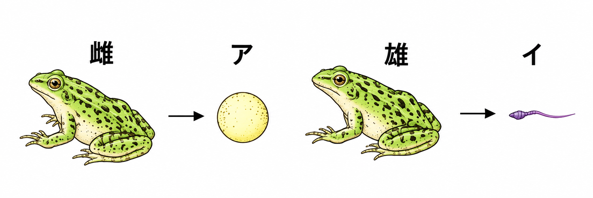
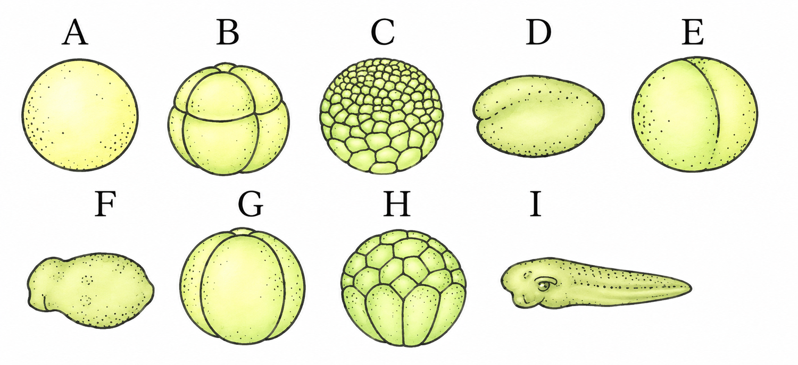
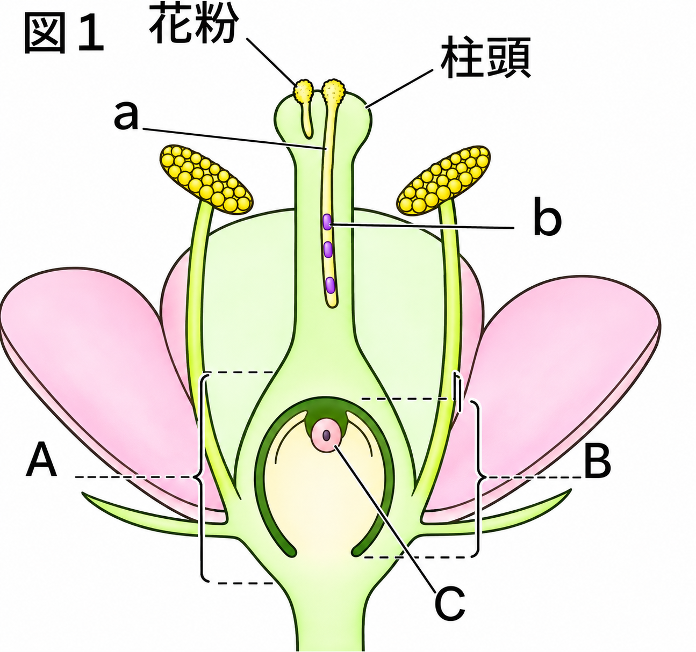
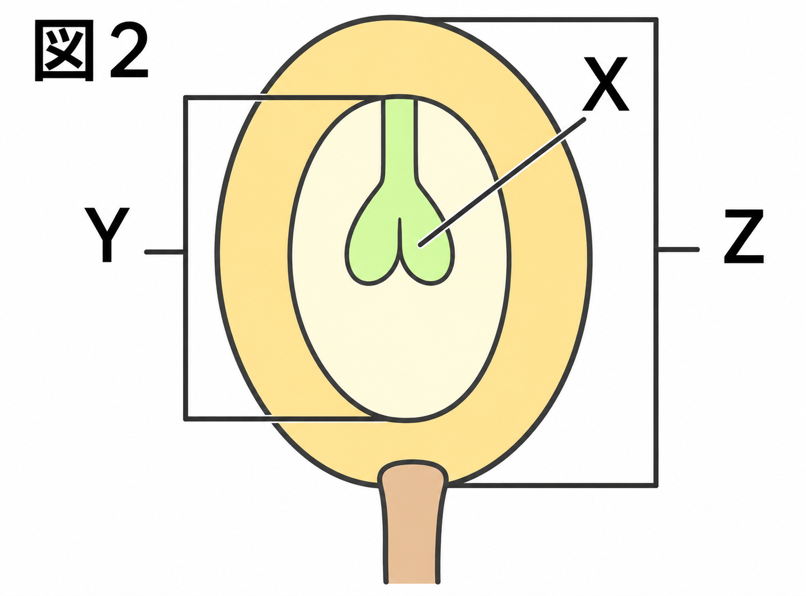

1生殖のことば
📖 江原予備校テキスト 練習より
生殖に関することばを確認します。
✏️ 練習1:生殖のことば
問1生物が成長しておとなの形となり、自分と同じ個体をつくりふえることを何というか。
正解はウ。生殖といいます。
問2ゾウリムシ・アメーバのように体細胞分裂により仲間をふやすことを何というか。
正解はイ。「分裂」といいます。
問3ジャガイモのように、イモから新しい個体が生まれるようなふえ方を何というか。
正解はア。栄養生殖です。
問4(2)(3)のような、メスオスの関係によらない生殖を何というか。
正解はエ。無性生殖です。
問5動物では精子と卵、植物では精細胞と卵細胞が合体することを何というか。
正解はウ。受精です。
問6(5)でできた卵を何というか。
正解はイ。受精卵です。
問7動物で、受精卵がエサを取れるようになるまでの期間の個体を何というか。
正解はア。胚です。
問8受精卵が親の成体になるまで変化していく過程を何というか。
正解はエ。発生です。
2カエルの生殖
📖 江原予備校テキスト 練習より
カエルの卵と精子、受精卵の変化について確認します。
✏️ 練習2:カエルの生殖
問1図のアとイは、それぞれ雌と雄の体内でつくられる。ア（雌でつくられる）の名称はどれか。

カエルの卵と精子
正解はウ。アは卵です。
問2図のアとイの核が合体してできるものを何というか。
カエルの卵と精子
正解はイ。受精卵です。
問3アとイの核が合体して1つの核になることを何というか。
正解はア。受精です。
問4卵は雌の体のどこでつくられるか。
正解はエ。卵巣でつくられます。
問5精子は雄の体のどこでつくられるか。
正解はウ。精巣でつくられます。
問6カエルの精子は、どのようにして卵にたどりつくか。
正解はイ。カエルは水中に精子を放出し、精子が泳いで卵にたどり着きます。
問7図のAは、カエルの卵細胞である。B〜Iを変化の順に並べたものはどれか。
A→□
A→□

カエルの受精卵の変化
正解はア。1個→2個→4個→8個→16個…と細胞が分かれ、やがてからだの形になっていきます。
問8受精卵はいくつの細胞からできているか。
正解はエ。受精卵は1つの細胞です。
問9受精卵が分裂をくり返して、多細胞の動物のからだができる過程を何というか。
正解はウ。発生です。
問10受精卵の3回目の体細胞分裂のとき、細胞は何個になるか。
正解はイ。2³＝8個です。
3被子植物の受粉と受精
📖 江原予備校テキスト 練習より
被子植物のめしべの先端に花粉がついたあとのようすを確認します。
✏️ 練習3:被子植物の受粉と受精
問1図1で、めしべの先端を何というか。

図1 被子植物
正解はア。柱頭です。
問2図1のA・B・Cの名称の組み合わせとして正しいものはどれか。
図1 被子植物
正解はエ。A＝子房、B＝胚珠、C＝卵細胞です。
問3図1のaのように、柱頭についた花粉からのびているものを何というか。
正解はウ。花粉管です。
問4図1のaの中を送られていくbは何か。
正解はイ。精細胞です。
問5図1のCの核と、bの核が合体することを何というか。
正解はア。受精です。
問6受精後、図1のCは体細胞分裂をくり返して図2のXで示されるものになる。Xは何か。

図2
正解はエ。Xは胚、Yは種子、Zは果実です。
問7図2のYとZの組み合わせとして正しいものはどれか。
図2
正解はウ。胚珠（B）が種子（Y）に、子房（A）全体が果実（Z）になります。